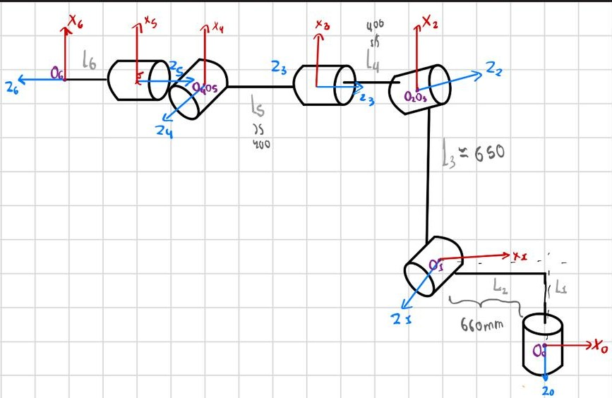

Forward Kinematics using DH Parameters (UR5e and KUKA KR16)
1. Introduction
- UR5e (6-axis collaborative robot)
- KUKA KR16 (6-axis industrial robot)
Forward kinematics computes the end-effector pose (position and orientation) with respect to the base frame, given:
- The robot geometric parameters (link lengths and offsets)
- The joint variables (joint angles for revolute joints)
The result is typically expressed as a homogeneous transformation matrix:
where:
- \( {}^{0}R_{6} \) is a 3×3 rotation matrix
- \( {}^{0}p_{6} \) is a 3×1 position vector
- \( \mathbf{q} = [q_1, q_2, q_3, q_4, q_5, q_6]^T \)
2. Model 1: UR5e forward kinematics (DH table)
2.1 Notes about the UR5e model
UR5e is a 6-DOF serial manipulator with a 3-DOF wrist. The DH table below uses symbolic geometric parameters \(L_1 \dots L_6\) and joint variables \(q_1 \dots q_6\).
Important modeling details:
- Angle offsets such as \(-\pi/2 + q_2\) are part of the frame assignment. They shift the zero position of a joint so that the DH frames align with a chosen “home” configuration.
- Length parameters \(L_i\) must be defined in consistent units (all in meters or all in millimeters).
- The resulting \( {}^{0}T_{6} \) depends on the chosen base frame and the end-effector frame definition (tool flange vs TCP).
2.2 Image placeholder (UR5e diagram)
Insert the UR5e kinematic diagram here (before the table):

2.3 UR5e DH table (LaTeX)
2.4 How to compute the UR5e forward kinematics
- Build each \( {}^{i-1}T_i \) using the matrix definition in Section 2.2 and the parameters from the table.
- Substitute joint angles \(q_i\) (radians) and link constants \(L_i\).
- Multiply all transforms in order to get \( {}^{0}T_{6} \).
- Extract position and orientation from \( {}^{0}T_{6} \).
- If you have a TCP/tool offset, multiply by \( {}^{6}T_{TCP} \).
3. Model 2: KUKA KR16 forward kinematics (DH-like table)
3.1 Notes about the KR16 model
KUKA KR16 is a 6-DOF industrial manipulator. Many KR-series robots are modeled with a DH (or DH-like) parameterization. The table below uses the symbols:
- \(L_i\): translational parameter (commonly used as an offset along the z-axis in DH-like models)
- \(D2_i\): translational parameter (commonly used as a distance along the x-axis in DH-like models)
- \(\theta_i\): joint angle (contains the variable \(q_i\) and possible constant offsets)
- \(\alpha_i\): twist angle between axes
This model is equivalent to the standard DH form if you interpret:
- \(d_i \leftarrow L_i\)
- \(a_i \leftarrow D2_i\)
and use:
As with the UR5e, constant angle terms (for example \(\pi/2\) shifts) are tied to the chosen reference frames and the definition of the robot “zero” configuration.
3.2 Image placeholder (KR16 diagram)
Insert the KR16 kinematic diagram here (before the table):

3.3 KR16 parameter table (LaTeX)
3.4 How to compute the KR16 forward kinematics
- Use the transform definition \( {}^{i-1}T_i = R_z(\theta_i)\,T_z(L_i)\,T_x(D2_i)\,R_x(\alpha_i) \).
- Substitute link constants \(L_i\), \(D2_i\) and joint variables \(q_i\).
- Multiply the six transforms in order to obtain \( {}^{0}T_{6} \).
- Extract \( {}^{0}p_{6} \) and \( {}^{0}R_{6} \).
- Apply any TCP/tool transform if needed.